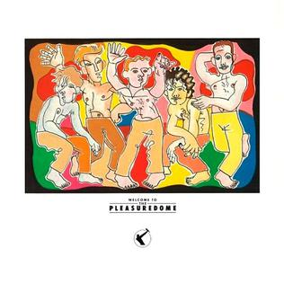

Frankie Goes to Hollywood - Welcome to the Pleasuredome
Much has been said about Frankie Goes to Hollywood. They were essentially the Beatles for one year (especially because of their Liverpudlian origins), before never having a successful album again. You'll know them from their first single, "Relax", an 80s classic. It, and three other singles, were taken from their debut album, Welcome to the Pleasuredome. Released in 1984, the group defined the poorly-predicted year by fighting directly against those claims with revolutionary music, namely about (gay) sex (in "Relax") and nuclear war (in "Two Tribes"). At the helm of their music was producer Trevor Horn, who helped synthesise their songs, and who essentially drowned most of their songs (on this album at least) in computer noises, and even session musicians. However, Horn, like Faithless (as we discussed earlier), may have gone a little mad while working on the B-sides for the band's singles. You see, he made remixes of the A-side of the single, but he made rather a lot of them. So many that it has taken a good while for me to compile this list for you, because there's a lot of mess here. However, I have done my best job cleaning it up, and this is what I've been left with.
First, we have the lead single, "Relax". As previously mentioned, this is the most well known track from the album, and also therefore the most successful. It's also about the opposite of relaxing, as you may be able to guess by Holly Johnson's… uh… emphasised usage of the word "come" (well, the spelling is debatable). The first remix was the "Sex Mix" (no need to give the game away!), a 16 minute mess which was so off the wall (and offensive) even the clubs were complaining about it. They made a second version of it that removed the strange choices, simply subtitled as "Edition 2". From there we've got "Bonus, Again", which is a nothing-notable B-side remix, the "New York Mix", which replaced the "Sex Mix" after Horn discovered the 12" version shouldn't just be 16 minutes of strange noises, and then three remixes which are actually just mashups of the previously mentioned remixes. And finally, songs on the single which aren't remixes, being "One September Monday" and "Later On", which are actually just interviews but I've got no rules against that so they stay, and "Ferry 'Cross the Mersey", a remixed form of which would appear on the album.
CD 2: "Relax"
| No. | Title | Original release | Length |
|---|---|---|---|
| 1 | Relax (Move) | (Almost) all 7" releases (A-side) | 3:53 |
| 2 | Relax (Sex Mix) | First 12" release (A-side) | 16:24 |
| 3 | Relax (Bonus, Again) | All 12" releases (B-side) | 4:31 |
| 4 | Relax (Sex Mix, Edition 2) | Second 12" release (A-side) | 8:20 |
| 5 | Relax (New York Mix) | Third 12" release (A-side) | 7:23 |
| 6 | Relax (Greek Disco Mix) | Greek 12" release (A-side) | 6:15 |
| 7 | Relax (The Last Seven Inches or Warp Mix) | Promotional 7" release (A-side) | 3:27 |
| 8 | Relax (Greatest Bits) | Cassette release | 16:49 |
| 9 | One September Monday | All 7" releases (B-side) | 4:47 |
| 10 | Ferry 'Cross the Mersey | Most 12" releases (B-side) | 4:03 |
| 75:52 |
Second, we have "Two Tribes". The song is the standard big-hit follow-up, that being "make another song exactly like that". However, this second hit was actually good, both in the sense of the song itself (which I think is just as good as "Relax"), and also in the fact that it also reached number one (for almost twice as long as "Relax"!). In fact, two of those weeks at number one were spent with "Relax" at number two, making them one of the only acts to have both the first and second positions in the UK singles chart in the same week. As for the remixes of this single, once again we've got a lot to dig through. There's the "Annihilation" mix, available on the first 12" release, and then "Carnage" on the second. "Surrender" was a B-side remix for both of these. "Hibakusha" was released on a limited edition 12", and then the Bang! Japanese compilation album. "We Don't Want to Die" is from the 7" picture disc release, and "Keep the Peace" is a mashup of previous remixes featured on the cassette release. Beyond "Two Tribes", we have its main B-side, "War". This mostly appeared as the "Hide Yourself" version on the B-side of 12" releases. However, a "Hidden" version would appear as the A-side, with "Two Tribes" as a B-side, on one 12" release. "War" would also appear on the album in another remixed form. Besides this, we have "One February Friday", another interview which would appear as the 7" B-side, and "The Last Voice", another spoken word track, which would appear as an unlisted B-side on most 12" releases.
CD 3: "Two Tribes"
| No. | Title | Original release | Length |
|---|---|---|---|
| 1 | Two Tribes (Cowboys and Indians) | (Almost) all 7" releases (A-side) | 3:57 |
| 2 | Two Tribes (Annihilation) | First 12" release (A-side) | 9:08 |
| 3 | Two Tribes (Surrender) | Most 12" releases (B-side) | 3:46 |
| 4 | Two Tribes (Carnage) | Second 12" release (A-side) | 7:54 |
| 5 | Two Tribes (Hibakusha) | Limited edition 12" release (A-side) | 6:38 |
| 6 | Two Tribes (We Don't Want to Die) | 7" picture disc release (A-side) | 4:10 |
| 7 | Two Tribes (Keep the Peace) | Cassette release (A-side) | 15:17 |
| 8 | War (Hide Yourself) | (Almost) all 12" releases (B-side) | 4:12 |
| 9 | War (Hidden) | "War" 12" release (A-side) | 8:33 |
| 10 | War (Somewhere Between Hiding and Hidden) | Cassette release | 4:16 |
| 11 | One February Friday | All 7" releases (B-side) | 4:55 |
| 12 | The Last Voice | Most 12" releases (B-side) | 1:14 |
| 74:00 |
Third is "The Power of Love". Unlike their previous two singles, "The Power of Love" is a slow, heartfelt ballad with none of the heavy synthesisers that they were known for. It was their third consecutive number one, and in fact the last number one the group would have. Due to its unsynthesised nature, the only versions of the track present on the single were the extended nine minute version (as opposed to the five minute version on the album), and an instrumental. For further content on the single, the band relied much more on original B-sides, most of which appeared on the album. The first is "The World is My Oyster", the opening track of the album, which appears in three forms: the 12" mix, "Scrapped" and "Trapped". As well as this, we have the two "Holier than Thou" tracks, which are essentially Christmas messages for fans, and finally the "Star Fix" of "The Only Star in Heaven", the original of which also appears on the album. The second "Holier than Thou" segues into the instrumental for "The Power of Love". It should be noted that the cassette release also has the same tracklist as the first 12" release, although there are slight differences (e.g. the opening of "The Power of Love" features a spoken word segment not featured on the 12", the "Holier than Thou" segments have reversed passages to mask swearing, and the closing instrumental features two hidden tracks, one of which is partially present at the start of the 12” release of "The Power of Love").
CD 4: "The Power of Love"
| No. | Title | Original release | Length |
|---|---|---|---|
| 1 | The Power of Love (Extended Version) | First 12" release (A-side) | 9:28 |
| 2 | The World is My Oyster (12" Mix) | Second 12" release (A-side) | 4:23 |
| 3 | The Only Star in Heaven (Star Fix) | Second 12" release (B-side) | 3:52 |
| 4 | The World is My Oyster (Scrapped) | First 12" release (B-side) | 1:38 |
| 5 | Holier than Thou (The First) | 1:08 | |
| 6 | The World is My Oyster (Trapped) | 2:29 | |
| 7 | Holier than Thou (The Second) | 4:10 | |
| 8 | The Power of Love (Instrumental) | Cassette release (edited form appeared on 12", B-side) | 3:30 |
| 29:35 |
And finally, the fourth single from the album was the title track, "Welcome to the Pleasuredome". It was the only single from the album released in 1985, outside of the band's year of hit singles. As such, it charted at number two and fell off the charts faster than their previous singles, likely because their popularity was waning now 1984 was over. The single itself, as it was a mainly synthesised track, did have some remixes. The similarly titled "Altered Real" and "Alternative Reel" appeared as the A-side on 7" singles, while the again similar "Real Altered" would appear on the first 12" single. The second 12" single featured another version, titled "Fruitness", while the cassette release featured "The Soundtrack from Bernard Rose's Video" version. Outside of the single, there were two other versions. The "Pleasure Fix", featured on the second 12" for "The Power of Love", and the "Urban Mix", featured on the Bang! compilation with the rare "Hibakusha" version of "Two Tribes". As for B-sides, there's "Get it On", the only unedited version appearing on the cassette release, and "Happy Hi!", which appeared all pretty much all of the single releases, although the cassette version has the "All in the Body" and "All in the Mind" versions, which appear nowhere else.
CD 5: "Welcome to the Pleasuredome"
| No. | Title | Original release | Length |
|---|---|---|---|
| 1 | Welcome to the Pleasuredome (Altered Real) | First 7" release (A-side) | 4:20 |
| 2 | Welcome to the Pleasuredome (Alternative Reel) | Second 7" release (A-side) | 5:05 |
| 3 | Welcome to the Pleasuredome (Real Altered) | First 12" release (A-side) | 11:40 |
| 4 | Welcome to the Pleasuredome (Pleasure Fix) | "The Power of Love" second 12" release (B-side) | 9:46 |
| 5 | Welcome to the Pleasuredome (Fruitness) | Second 12" release (A-side) | 12:15 |
| 6 | Welcome to the Pleasuredome (Urban Mix) | Bang! Japanese compilation, 1985 | 8:08 |
| 7 | Welcome to the Pleasuredome (The Soundtrack from Bernard Rose's Video) | Cassette release | 5:37 |
| 8 | Get It On | All releases (full length version on cassette) | 4:06 |
| 9 | Happy Hi! | (Almost) all releases (B-side) | 4:04 |
| 10 | Happy Hi! (All in the Body) | Cassette release | 1:18 |
| 11 | Happy Hi! (All in the Mind) | 1:05 | |
| 67:24 |

Released: 29 October 1984
Length: 64:06
Genre: Synth-pop
Personal rating: 8 / 10
Favourite song: "Relax"
- "The World is My Oyster" (including "Well…" and "Snatch of Fury") – 1:57
- "Welcome to the Pleasuredome" – 13:40
- "Relax" (Come Fighting) – 3:56
- "War" (…and Hide) – 6:12
- "Two Tribes" (For the Victims of Ravishment) – 3:23
- "(Tag)" – 0:35
- "Ferry" (Go) – 1:49
- "Born to Run" – 3:56
- "San Jose (The Way)" – 3:09
- "Wish (The Lads Were Here)" – 2:48
- "The Ballad of 32" – 4:47
- "Krisco Kisses" – 2:57
- "Black Night White Light" – 4:05
- "The Only Star in Heaven" – 4:16
- "The Power of Love" – 5:28
- "…Bang" – 1:08